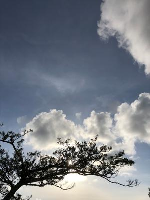
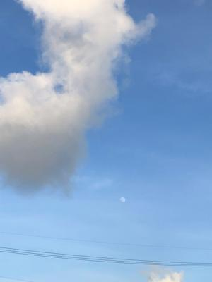
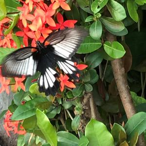

うるがいの話 ある日
最新: プライムデー【うるがいの話 ある日】とは 一日だけのプログです
『うるがいの話』の最新一日だけのプログで、通信料が少なく経済的だ。カニの画像をクリックすると全ての日付が載る『うるがいの話』サイトを表示します
|
|
【うるがいの話】 うるがい(ｳﾙｶﾞｲ urugai)とは、『もずくがに』の名前でとても大きくなります。 |
|---|---|
|
|
【カミマヤーの話】 猫のことを方言でマヤーといいます。カミマヤー（kamimayaa）とは、神の猫のことです。 |
|
【たながぁの音楽】 たながぁ（ﾀﾅｶﾞｰ tanagaa）とは手長えびのことで、何種類かあり大きいのは車 エビぐらいになります。 |

|
【ぶながぁの話】 ぶながぁ(ﾌﾞﾅｶﾞｰ bunagaa)とは、赤い髪の毛、赤い身体、そして身長は１ｍ２０ｃｍ ぐらい、川の蟹を食べているの目撃された。場所は沖縄県国頭郡大宜味村のと ある村僕の隣近所に住んでいる爺さんから、聞いた話です。 |
|
|
【ギーマの話】 ギーマ(giima)とは、山原の里山に咲くスズランに似た、 花を付けます。実は食べられます、 気が付くと口の周りが紫になっています。 |
2022年07月12日 (火）プライムデー
16:08
 
Amazon Prime Day（プライムデー）2022はプライム会員に向け、年一度のビ
ッグセールです。7/12火曜0時から7/13水曜23時59分まで、トップブランドや
中小企業から ...
12時に始まってすぐに全部購入したよ
予定より総額1万安く購入できた
００時２６分のコドモからのメールである、テレビとレコーダ、ＰＣスピーカ
合計が１８４、４０４円とかなりの額なのでコドモにお願いした。親ながら節
約技がすごいと思うコドモである。

昨日、夕方１６時２２分に修理センターから電話があった。『電源が入るので
すが、パスワードを教えて下さい』、え？、確か電源が入らないので修理をお
願いしたのですが・・・、実は子供のパソコンで、私はパスワードを知らない
で折り返し電話します。子供にパスワードをかけていないよねと、確認したの
に・・（ぶつぶつ）。雑な子供にパスワードを確認して、修理センターに電話
をすると直通ではなく、自動電話でデルの製品の場合は１を押してください、
それ以外は２を・・・・・、っけ難儀だな・・・・・、大城ですと人につなが
る、ただ先ほどの人ではなく私の本人確認からは始まり、・・でパスワードを
先ほどの人に伝えたいのですがと伝えると、『担当者に伝えます』と回答する
ん、そこは沖縄ですか（大城の名前から）？、『いいえ福岡ですが』、もしパ
スワードが間違っていたら連絡いただけるでしょうか、『もう５時前ですので
明日以降になると思います』。あれから連絡がこないということは、パスワー
ドはＯＫ、それにしても修理にだす前に、店舗の受付担当者も電源が入らない
ことを確認したのに。やはり、何らかの不具合があるのだろう。
１６時０１分 ビットコインの総資産 ￥７、９０２↓